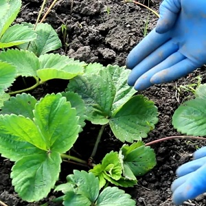

Несколько способов чем и как подкормить клубнику весной, летом и осенью
Чтобы собрать богатый урожай ароматных сладких ягод, необходимо
соблюдать правила агротехники. Среди них отдельного внимания заслуживают мероприятия,
направленные на внесение удобрений. Подкормка клубники нужна для своевременной бутонизации
и плодоношения, а также для защиты от различных заболеваний.
Ягодную культуру удобряют на протяжении всего периода вегетации, при этом используют, как
народные средства, так и готовые покупные составы. Выбор разновидности подкормки зависит
от этапа развития растения и способа внесения полезных добавок. В целях безопасности важно
придерживаться дозировок.
Популярное органическое средство, которое богато на полезные вещества – калий, азот, кальций, фосфор, цинк, магний, бор. Для хорошего урожая нельзя подкармливать клубнику свежим навозом из-за его токсичности, поэтому перед использованием коровяк нужно выдержать на отдельном участке.
Древесная зола Полезна содержанием микроэлементов, особенно, калия. В качестве сырья для золы подходят листва, стебли растений, кора, ветки, солома, дерево, сосновые иголки. Средство не только служит удобрением в период бутонизации, но и предупреждает появление вредителей и болезней. С золой нельзя сочетать азотные подкормки.
Йод Средство часто используется для весенней корневой обработки. Удобрение раствором с содержанием йода улучшает рост растения, способствует своевременной бутонизации с последующим плодоношением. При этом состав выполняет роль профилактического препарата, защищая клубнику от вредителей и всевозможных болезней.
Популярное органическое средство, которое богато на полезные вещества – калий, азот, кальций, фосфор, цинк, магний, бор. Для хорошего урожая нельзя подкармливать клубнику свежим навозом из-за его токсичности, поэтому перед использованием коровяк нужно выдержать на отдельном участке.
Древесная зола Полезна содержанием микроэлементов, особенно, калия. В качестве сырья для золы подходят листва, стебли растений, кора, ветки, солома, дерево, сосновые иголки. Средство не только служит удобрением в период бутонизации, но и предупреждает появление вредителей и болезней. С золой нельзя сочетать азотные подкормки.
Йод Средство часто используется для весенней корневой обработки. Удобрение раствором с содержанием йода улучшает рост растения, способствует своевременной бутонизации с последующим плодоношением. При этом состав выполняет роль профилактического препарата, защищая клубнику от вредителей и всевозможных болезней.
